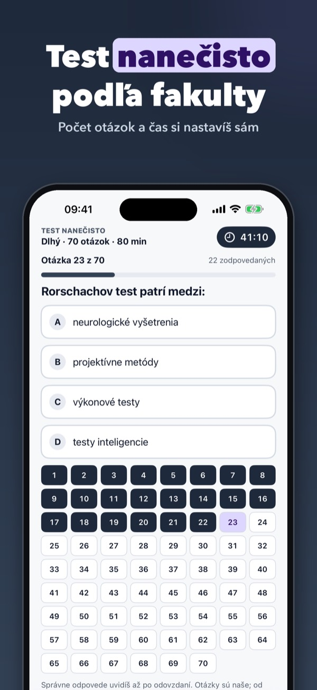
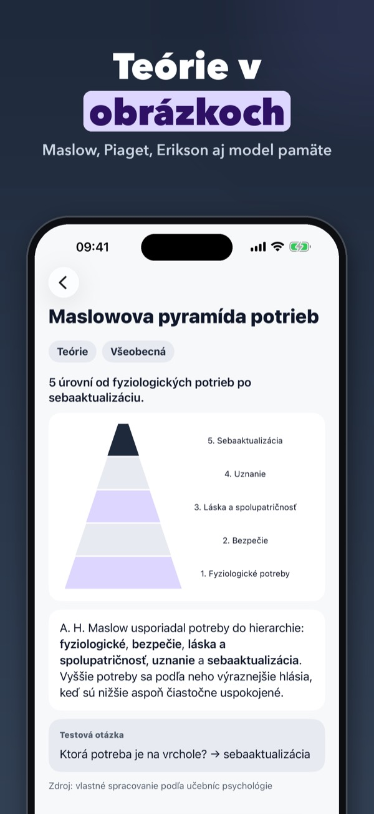
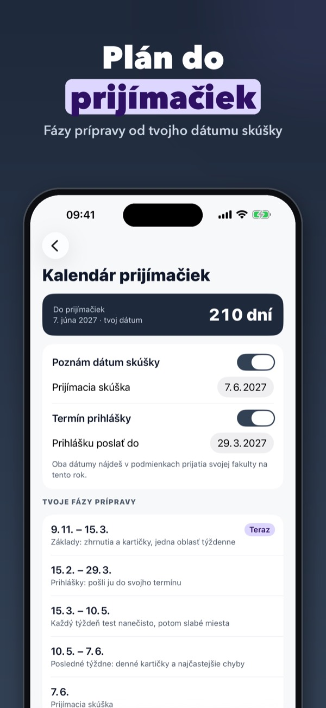
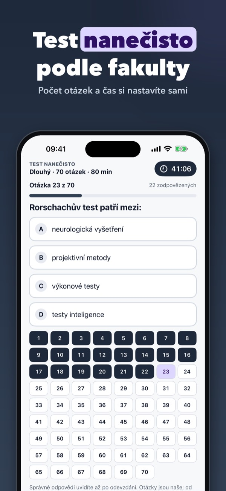
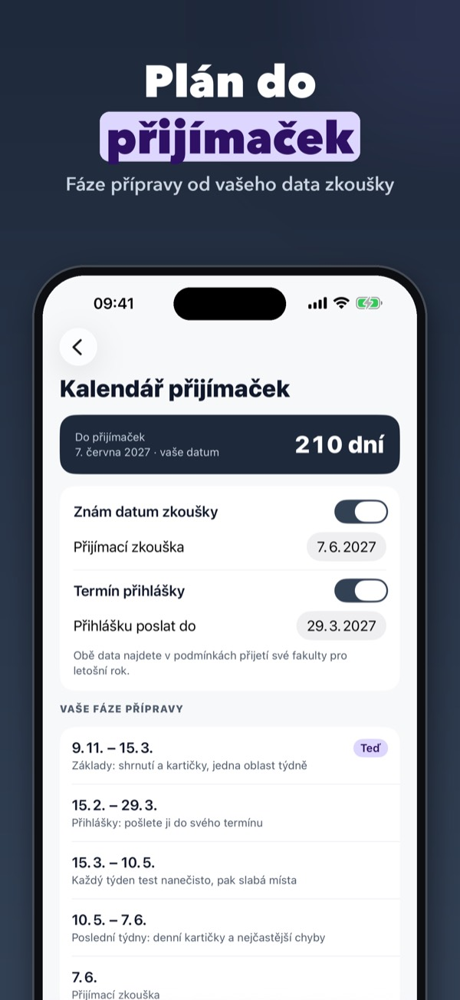

Prijímačky na psychológiu
Pripravuješ sa na prijímačky na psychológiu? Zhrnutia 8 oblastí, kartičky s opakovaním a testy nanečisto s počtom otázok a časom podľa tvojej fakulty. Aj bez internetu.



Psychora ťa pripraví na prijímacie skúšky na psychológiu po malých krokoch: každý deň pár kartičiek, ktoré sa vracajú práve vtedy, keď ich začínaš zabúdať. Prečítaj si zhrnutie oblasti, precvič otázky s vysvetlením a pred skúškou si urob test nanečisto s časom.
Bez nákupu je k dispozícii celá vývinová psychológia (zhrnutie, kartičky, otázky), jeden celý test nanečisto, pojmy, hľadanie a kalendár. Psychora Plus je jednorazový nákup: všetkých 8 oblastí, všetky kartičky a otázky, neobmedzené testy nanečisto a precvičovanie slabých miest. Bez predplatného, s rodinným zdieľaním.
Psychora nie je aplikácia žiadnej fakulty ani univerzity. Otázky a kartičky píšeme sami podľa učebníc psychológie; nepoužívame obsah starých prijímacích testov. Klinická psychológia je v aplikácii len ako učivo, nie zdravotná rada. Podmienky prijatia, termíny a formát skúšky si vždy over na webe fakulty.
Terms of Use (EULA): https://www.apple.com/legal/internet-services/itunes/dev/stdeula/
Privacy: https://apps.baytech.nl/psychora-cz/
Přijímačky na psychologii
Připravujete se na přijímačky na psychologii? Shrnutí 8 oblastí, kartičky s opakováním a testy nanečisto s počtem otázek a časem podle vaší fakulty. I bez internetu.


Psychora vás připraví na přijímací zkoušky na psychologii po malých krocích: každý den pár kartiček, které se vracejí právě ve chvíli, kdy je začínáte zapomínat. Přečtěte si shrnutí oblasti, procvičte otázky s vysvětlením a před zkouškou si udělejte test nanečisto s časem.
Bez nákupu je k dispozici celá vývojová psychologie (shrnutí, kartičky, otázky), jeden celý test nanečisto, pojmy, hledání a kalendář. Psychora Plus je jednorázový nákup: všech 8 oblastí, všechny kartičky a otázky, neomezené testy nanečisto a procvičování slabých míst. Bez předplatného, s rodinným sdílením.
Psychora není aplikací žádné fakulty ani univerzity. Otázky a kartičky píšeme sami podle učebnic psychologie; nepoužíváme obsah starých přijímacích testů. Klinická psychologie je v aplikaci jen jako učivo, ne zdravotní rada. Podmínky přijetí, termíny a formát zkoušky si vždy ověřte na webu fakulty.
Terms of Use (EULA): https://www.apple.com/legal/internet-services/itunes/dev/stdeula/
Privacy: https://apps.baytech.nl/psychora-cz/